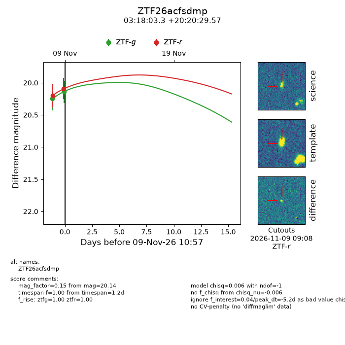
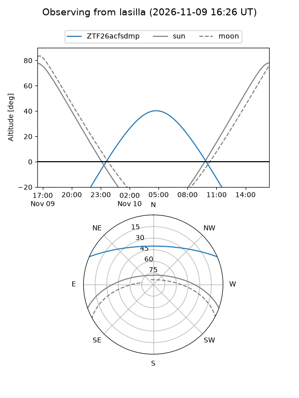
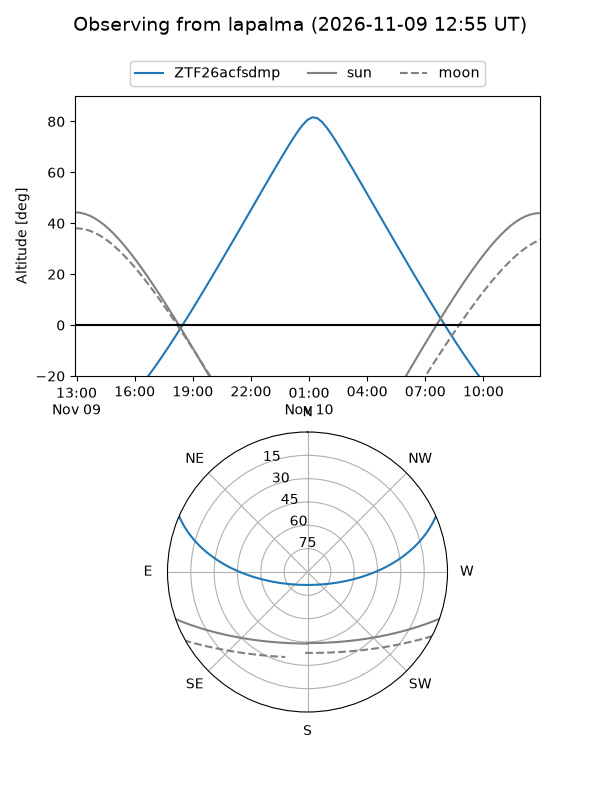
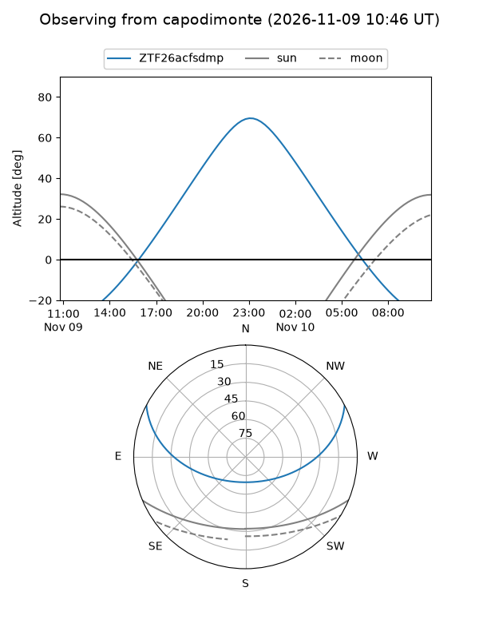
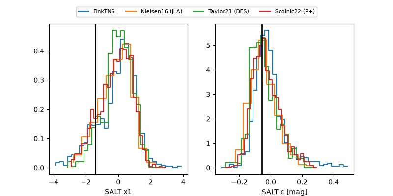

ZTF26acfsdmp
Target ZTF26acfsdmp at 2026-11-09 11:00
Aliases and brokers:
FINK-ZTF: ztf.fink-portal.org/ZTF26acfsdmp
Lasair-ZTF: lasair-ztf.lsst.ac.uk/objects/ZTF26acfsdmp
ALeRCE-ZTF: alerce.online/object/ZTF26acfsdmp
Direct TNS query: direct search
alt names
ZTF26acfsdmp (ztf,fink_ztf)
Coordinates:
equatorial (ra, dec) = 49.5136,+20.34155
equatorial (HMS+DMS) = 03:18:03.26,+20:20:29.57
galactic (l, b) = (163.5623,-30.72796)
Flags:
peak dt: -5.2
Photometry:
last ztfg=20.14, ztfr=20.09
2 ztfg, 2 ztfr detections
Lightcurve

Visibility



Additional plots
